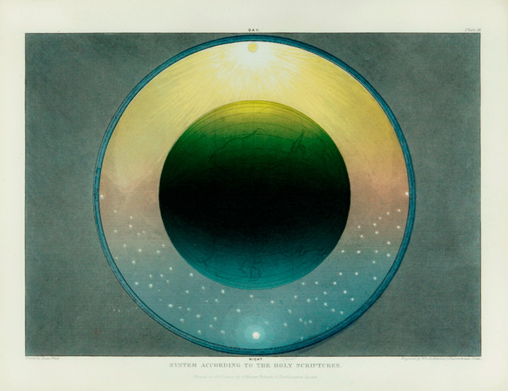

Sunday, April the 18th, 2010
back to: title, date or indexes
The giant ball of the earth. Above, day, and a tiny sun. Below, night, and stars, and the moon. Beyond the outer circle, nothing, nothing at all. “System According To The Holy Scriptures”. This is the Muggletonian Cosmos, as depicted in the nineteenth century by Isaac Frost.

A big zoomable image can be found here, and another of Isaac Frost's Muggletonian engravings is here. Many thanks to Ed Baxter for drawing them to my attention.